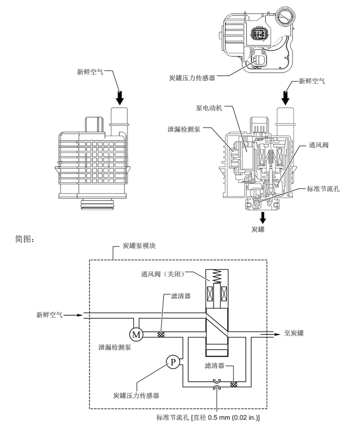

2.448,1.896 2.302,1.448
2.302,1.448 2.135,1.448
true
5.26,1.229 4.688,1.552
4.688,1.552 4.438,1.552
true
5.052,3.115 4.76,2.177
4.76,2.177 4.594,2.177
true
4.781,3.115 4.323,2.615
4.323,2.615 4.156,2.615
true
6.115,1.667 5.979,1.667
5.979,1.667 5.844,1.896
true
6.271,2.99 6.135,2.99
6.135,2.99 5.667,3.813
true
6.26,3.865 6.125,3.865
6.125,3.865 5.281,4.146
true
4.292,5.76 3.958,5.573
3.958,5.573 3.792,5.573
true
2.448,5.052 2.313,5.052
2.313,5.052 2.313,5.323
true
3.49,6.031 3.354,6.031
3.354,6.031 3.292,6.833
true
4.781,7.854 4.781,7.5
4.781,7.5 4.615,7.5
true
3.448,7.448 2.802,7.844
2.802,7.844 2.802,8.021
true
4.438,8.438 4.438,7.927
true
1.573,1.385 2.26,1.625
0.677,0.229
10
false
新鲜空气
3.458,1.51 4.604,1.99
1.135,0.469
10
false
炭罐压力传感器
4.01,2.125 4.854,2.417
0.833,0.281
10
false
泵电动机
6.115,1.573 6.802,1.813
0.677,0.229
10
false
新鲜空气
3.427,2.563 4.406,3.042
0.969,0.469
10
false
泄漏检测泵
6.323,2.885 7.052,3.135
0.719,0.24
10
false
通风阀
6.281,3.781 7.167,4.271
0.875,0.479
10
false
标准节流孔
5.146,4.615 5.833,4.854
0.677,0.229
10
false
炭罐
0.302,4.792 2.427,5.125
2.115,0.323
12
false
简图：
2.51,4.948 4.042,5.188
1.521,0.229
10
false
炭罐泵模块
2.885,5.531 3.969,5.771
1.073,0.229
10
false
通风阀（关闭）
3.5,5.979 3.958,6.188
0.448,0.198
10
false
滤清器
5.813,6.74 6.75,6.948
0.927,0.198
10
false
至炭罐
4.188,7.406 4.813,7.656
0.615,0.24
10
false
滤清器
2.01,7.031 3.406,7.302
1.385,0.26
10
false
泄漏检测泵
2.313,8.021 3.948,8.313
1.625,0.281
10
false
炭罐压力传感器
3.198,8.469 6.156,8.719
2.948,0.24
10
false
标准节流孔 [直径 0.5 mm (0.02 in.)]
0.74,6.365 1.427,6.604
0.677,0.229
10
false
新鲜空气